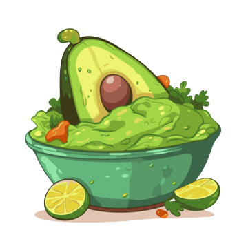

Guacamole Recipe
A fresh dip made with avocados, lime, cilantro, and jalapeños.
Ingredients
- 3 ripe avocados
- 1/2 small onion, finely chopped
- 1-2 cloves garlic, minced
- 1-2 medium tomatoes, finely diced (seeds removed)
- 1 small jalapeño, finely chopped (optional, for heat)
- 1/4 cup cilantro, chopped
- 1 lime, juiced
- 1/2 teaspoon salt (to taste)
- 1/4 teaspoon black pepper (optional)
- A pinch of ground cumin (optional, for extra flavor)
Preparation Time
- Prep time: 10 minutes
- Total time: ~10 minutes
Instructions
- Prepare the Avocados:
- Slice the avocados in half lengthwise and remove the pit. Scoop the flesh into a large bowl.
- Mash the avocado with a fork or potato masher to your desired level of smoothness (some prefer it chunky, others smoother).
- Add Fresh Ingredients:
- Add the chopped onion, minced garlic, diced tomatoes, chopped jalapeño (if using), and chopped cilantro to the mashed avocado.
- Season the Guacamole:
- Squeeze the lime juice over the mixture, and add salt, black pepper, and a pinch of cumin if desired.
- Stir to combine all ingredients well. Taste and adjust the seasoning with more lime, salt, or pepper if needed.
- Serve:
- Serve immediately with tortilla chips, tacos, or as a topping for other Mexican dishes.
- If you're not serving it right away, cover the guacamole with plastic wrap, pressing the wrap directly on the surface to prevent browning, and refrigerate.
Guacamole is a fresh and flavorful dip that's perfect for parties, snacks, or as an accompaniment to Mexican meals. The creamy texture of the avocado, combined with the freshness of lime, cilantro, and onions, makes for a crowd-pleasing treat. Enjoy!